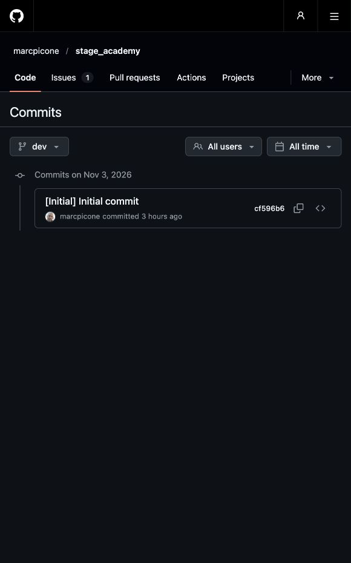
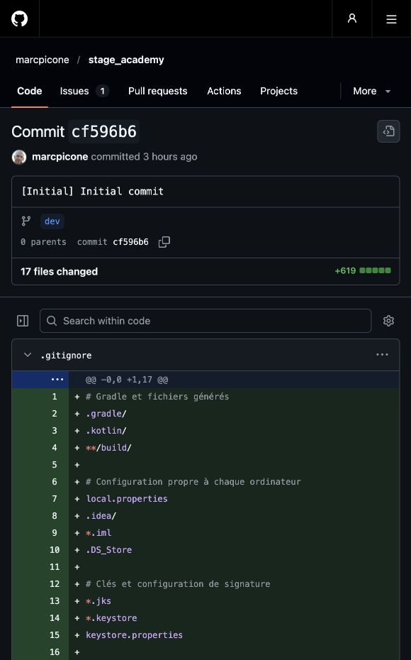

Comprendre avant de manipuler
Garder la trace.
Proposer un changement.
Un petit parcours pour apprendre à lire l’histoire d’un projet et comprendre comment une modification peut être relue avant d’être acceptée.
Les mots nouveaux sont expliqués dans les notes 💡 : à droite sur ordinateur, sous le passage concerné sur téléphone.
01 / Le problème
« Ça marchait hier… »
Hier, ton quiz affichait le bon résultat. Aujourd’hui, après une modification, il se trompe. Comment retrouver ce qui a changé ?
quiz/quiz-v2/quiz-final/quiz-final-vraiment/Faire des copies ne dit pas clairement ce qu’on a changé ni pourquoi. Le versionnement garde un historique organisé des étapes enregistrées.
02 / Enregistrer une étape
Git : l’historique sur ton ordinateur.
Git suit les changements dans un dépôt. Tu choisis les changements que tu veux conserver, puis tu crées un commit.
En anglais, to commit évoque le fait de s’engager ou de valider. Dans Git, retiens surtout : « j’enregistre une étape du projet ». Le message du commit explique cette étape.


Git n’a pas une seule apparence : l’IDE (ton logiciel pour coder), le terminal (une fenêtre de commandes) et GitHub peuvent montrer le même historique autrement. Ici, tu vois GitHub dans le navigateur.
03 / Préparer un changement
Une branche pour un sujet précis.
La branche principale du projet s’appelle dev. Pour ajouter le score, on crée une branche de travail : mp/ajouter_score.
Au départ, cette branche pointe sur le même commit que dev. Créer une branche ne crée pas de commit. Les nouveaux commits pourront ensuite faire avancer ce chemin de travail sans déplacer dev.
Nos conventions pour se comprendre vite
Une convention est une règle choisie par l’équipe. Git n’impose pas les formats ci-dessous.
- Nom de branche
initiales/nom_de_brancheExemple :
mp/ajouter_score.mpreprésente les initiales de l’auteur ; la suite nomme le travail.- Message de commit
[FeatureName] Commit messageExemple :
[QuizScore] Add the final score, soit « Ajouter le score final ».- Titre de PR
[QuizScore] Add the final scoreLe même repère permet de comprendre le sujet avant d’ouvrir le détail.
Écris ce qui change : « Ajouter le score final » renseigne davantage que « update » (« mise à jour »). Ici, les exemples sont en anglais avec leur sens en français ; l’objectif est de comprendre le changement.
04 / Partager
GitHub : retrouver le projet en ligne.
GitHub héberge des dépôts Git et permet de collaborer. Le dépôt de ton ordinateur est local ; celui hébergé sur GitHub est distant.
Ton ordinateur
Fichiers + commits locaux
GitHub
Dépôt distant et historique envoyé
Un push envoie les commits vers le dépôt distant. Un commit n’est pas envoyé automatiquement. Et envoyer une branche ne fusionne pas ses changements dans dev.
05 / Proposer et relire
Une PR, c’est une proposition de changement.
Une pull request (PR) propose d’intégrer les changements de la branche de travail dans une autre branche. Pour nous : mp/ajouter_score → dev.
[QuizScore] Add the final score
Ajouter le score final du quiz.
Depuis : mp/ajouter_score
Vers : dev
Résumé : compter les bonnes réponses et afficher le résultat.
On commence par le titre et le résumé. Si l’on veut comprendre le détail, on ouvre les commits et les fichiers modifiés. La review permet de poser des questions et de demander des corrections avant de décider.


06 / Voir tout le chemin
Une modification, du premier point à la PR.
Chaque point représente un commit. Les traits relient les commits à leurs parents. Les noms des branches sont des repères sur cet historique.
Simulation pédagogique — aucun dépôt modifiéLe parcours complet
Lis les six étapes ci-dessous.
Lire les six étapes en texte
- Le point de départ. Le projet existe sur dev.
- Créer une branche. mp/ajouter_score pointe au départ sur le même commit que dev. Aucun nouveau point.
- Enregistrer un commit. Le point [QuizScore] Add the final score apparaît sur la branche de travail. dev ne bouge pas.
- Envoyer la branche. Le push envoie la branche et son historique vers GitHub. Aucun nouveau commit n’est créé.
- Ouvrir une PR. On propose mp/ajouter_score → dev. La discussion est ouverte ; dev est encore inchangée.
- Accepter et fusionner. Après relecture, les changements rejoignent dev. Cet exemple utilise un commit de fusion avec deux parents.
Il existe plusieurs façons de fusionner. Ici on illustre une fusion avec un commit qui relie les deux chemins ; d’autres méthodes seront vues plus tard.
07 / À toi de jouer
Vérifie ce que tu as compris.
Pas de note : lis l’explication après chaque réponse et réessaie si besoin.
La suite, bientôt
Passer à la pratique.
Dans la prochaine page : créer ton compte GitHub, faire un fork (une copie du projet sur ton compte), puis un clone (une copie sur ton ordinateur). Ensuite, on réalisera une petite modification, un commit et un push.
← Retrouver le parcours